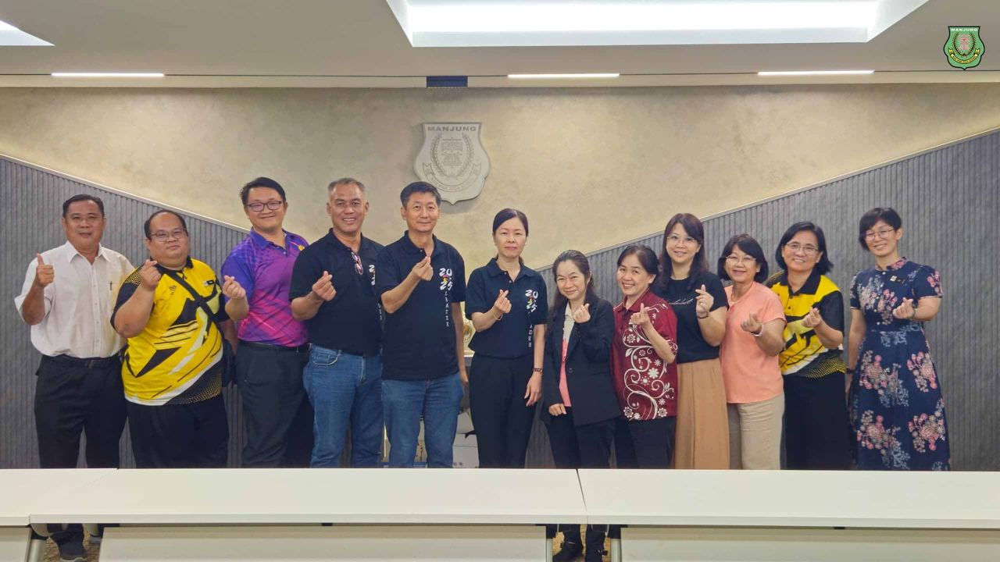
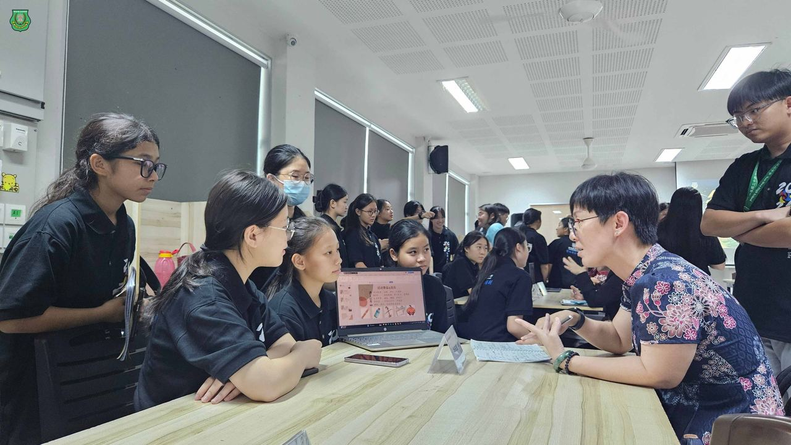
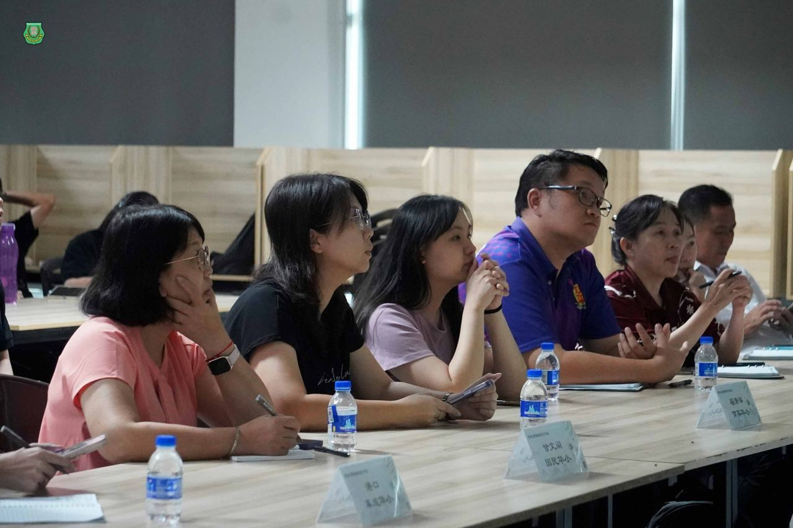
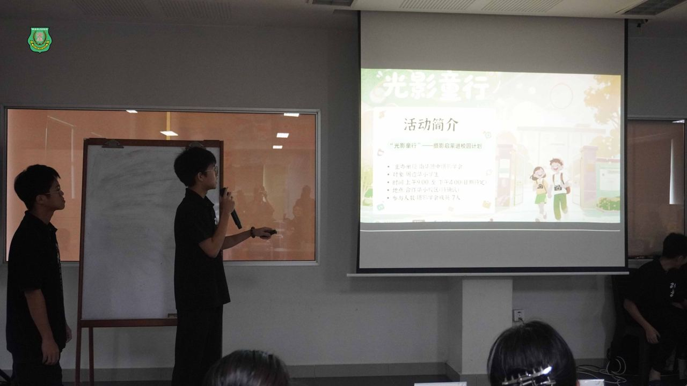
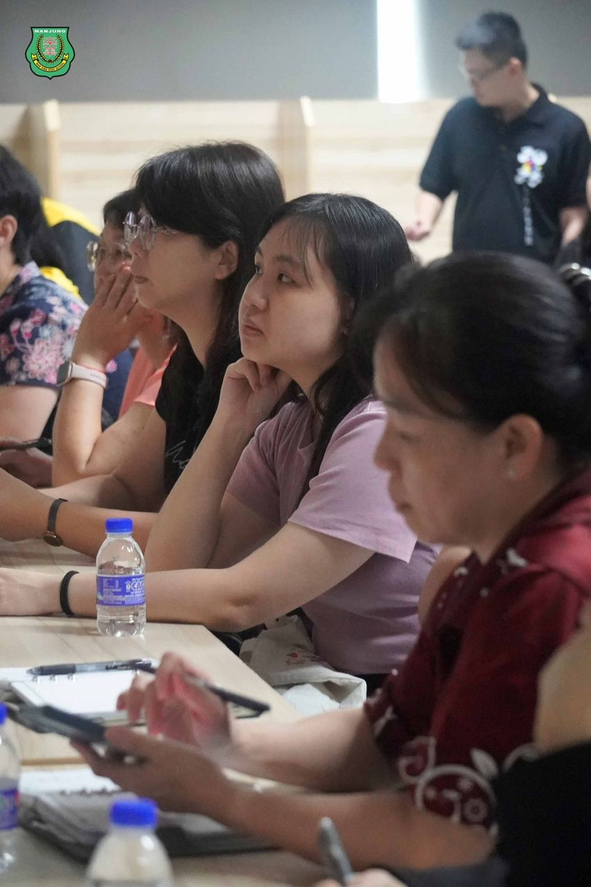
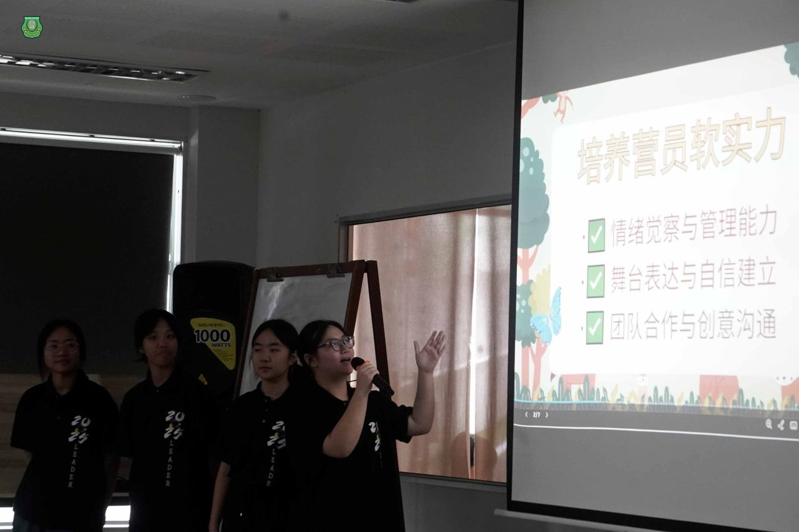
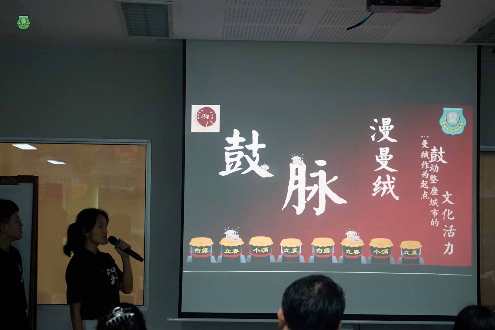
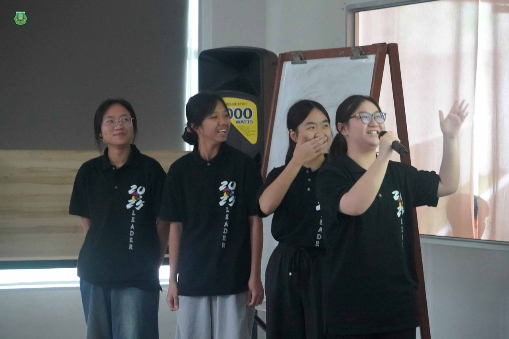

南华独中推动“社会责任行动计划”
南华独中推动“社会责任行动计划”
从学会团体走进社区服务
学生以行动与真诚回应世界
“#社会责任行动计划”作为2025年学生领袖培训计划重中之重，来自南华独中18个学会团体的代表学生们不再只是聆听，而是亲自站上舞台，展现他们筹备已久的“社会责任行动计划”。这项汇聚教育热情与社区理想的计划，成功吸引曼绒县10所华小校长及代表亲自到场参与遴选、配对与对接社会责任计划书。
计划宗旨：#资源共享 × #需求对接 × #实践出击
此次社会责任行动计划，基于三个核心理念：其一、结合各学会专长，设计出具特色、具实效的社区方案；其二、关注社区与华小真实需求，进行精准对接与合作洽谈；其三、透过实践深化学生的社会责任与服务精神。各学会在活动前已完成初步计划书撰写，并开放供全曼绒县华小校长预先阅览。
展示+对接：双环节进行，全员上阵
当天活动分为两阶段：① #计划书展示会；② #计划书对接会。 在计划书展示会上，18个学会逐一向现场华小代表简报其计划内容，涵盖从中华文化传承、技艺推广、艺术体验、文化教育到环境永续等多个维度。 各团队力求用短短数分钟呈现“这个计划为何值得合作”，不少内容令人眼前一亮。“回应社会与华小需求；共创教育与社区双赢。”这是主办方为本次简报定下的基调。
展示结束后，全场化为自由流动的“计划书对接会”——各学会团体设置咨询窗口，由学生自己接待前来的校长与代表，说明计划细节、听取反馈、当场协商调整。 这一开放对谈环节，不只训练了学生的表达能力，更考验他们发挥共情的能力：倾听社区与华小需求，坚守原则下达成最大的共赢局面。
活动回应：#真需求，#真对话，#真合作
本次对接共吸引了10所华小参与，部分计划当场获得认领，多数达成合作意向，还有部分校方表示将与学会进一步跟进讨论合作细节。 最令人动容的是，许多校长在对谈后留下积极正面的回馈，并表示愿意在未来与学会团体作进一步的建教合作，促成计划书推动。
计划背后的教育理念：#学生走出校区，#以服务回应社区需求
“社会责任行动不是作业，不是表演，而是一个开始。” 南华独中秉持“#美美与共·#天下大同”的教育资源共享理念，让学生在“做中学、行中悟”。每一份计划书并非成品，而是一封“邀请函”——邀请华小一起共同参与、共同设计，打造真正有社区温度的教育合作。
这一天，计划书不再是纸面文件，而是学生伸出的手，握住了社区的回应。 未来一年中，这些计划将陆续进入合作华小展开实施。或许学生还年轻、资源有限，但他们已在这场配对活动中，学会了真正的起点：聆听、回应、共情、协商、执行。
“社会责任，不只是社会需要你，而是你愿意去成为一部分。”







